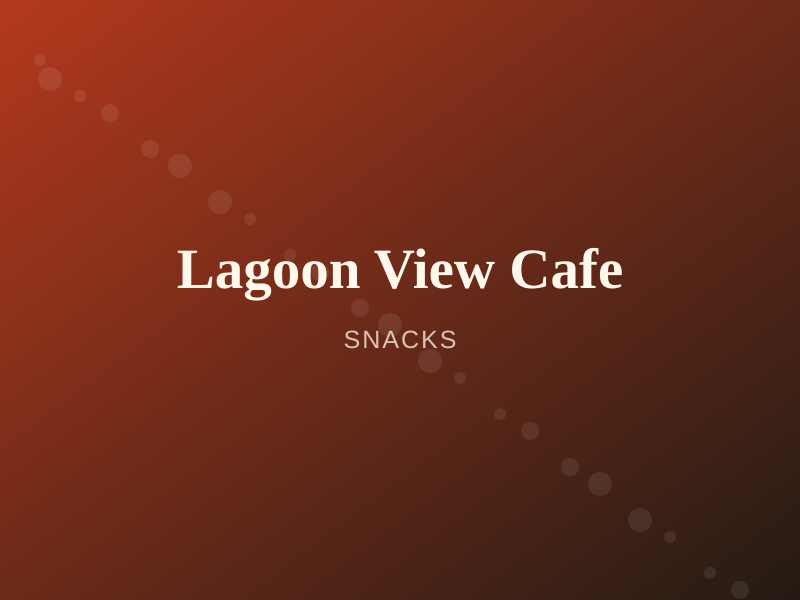
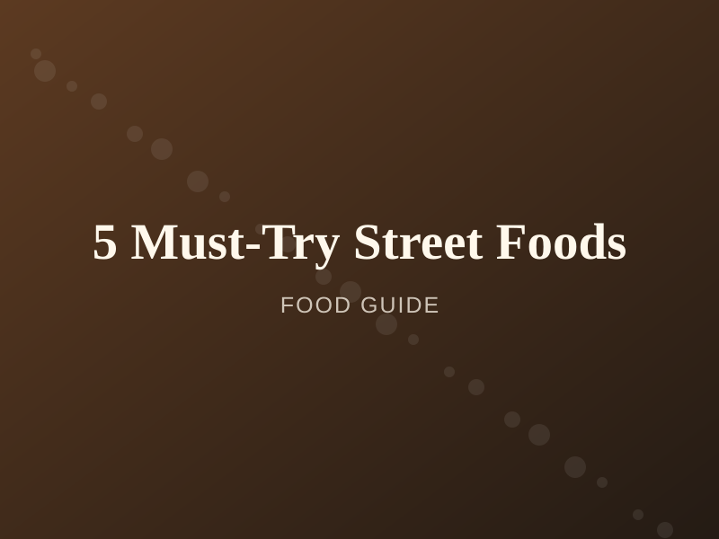
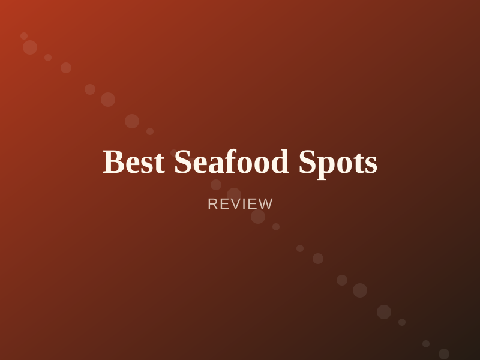

Cafe
CafePalmyrah Cafe
Palmyrah-infused coffee and fresh bakes in a plant-filled courtyard.
From temple-side curry houses to lagoon-view cafes and midnight kottu stalls — discover where Jaffna really eats, with menus, prices and honest reviews.
Jump straight to the kind of Jaffna food experience you're after.
CafePalmyrah-infused coffee and fresh bakes in a plant-filled courtyard.

CafeSunset views over the lagoon with light bites and fresh juices.
A tea house specialising in Ceylon black tea and milk toffee.
Chopped roti stir-fried with egg, vegetables and meat.
Deep-fried pastry stuffed with spiced minced mutton.
Thick palmyrah-root porridge loaded with seafood.
The crab curry alone is worth the trip to Jaffna. Warm service and huge portions.
Beautiful rooftop setting and the fusion kottu bowl was unlike anything I've had.
Lovely quiet spot to work from in the morning. Their palmyrah iced coffee is a must-try.

From mutton rolls to odiyal kool — here's your street food checklist.
Read more →How Tamil, coastal and palmyrah traditions shaped the region's food.
Read more →
Our picks for the freshest crab, prawns and lagoon fish in Jaffna.
Read more →List your place on Jaffna Food Guide and reach thousands of hungry visitors.